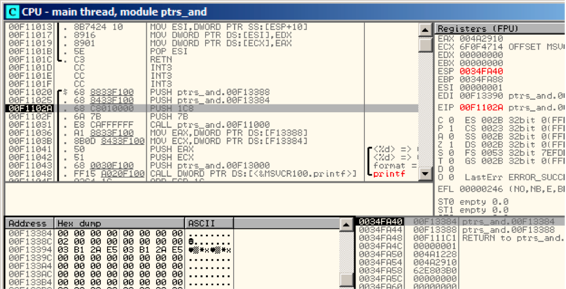
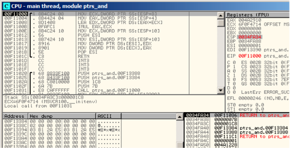
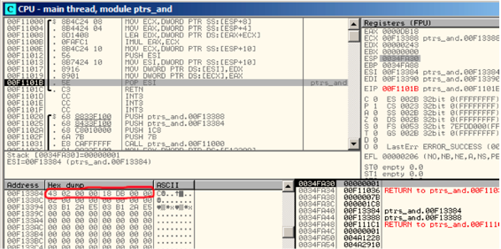
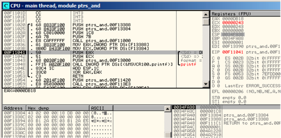
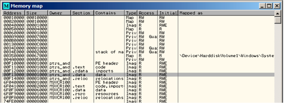
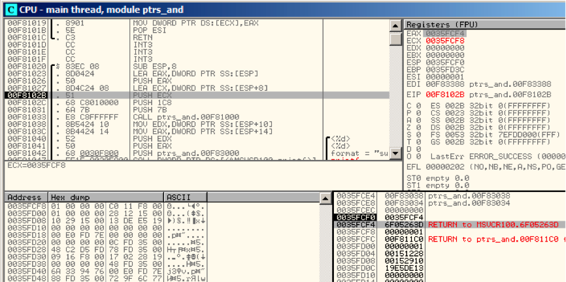
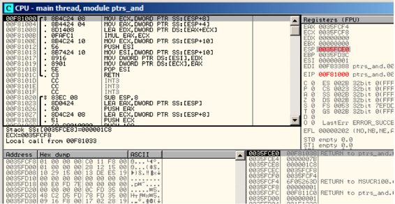
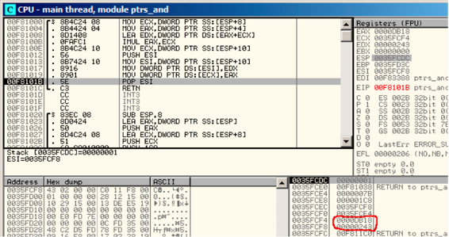

第十章
指针
指针通常被用作函数返回值(recall scanf() case (6)).例如，当函数返回两个值时。
10.1 Global variables example
#include <stdio.h>
void f1 (int x, int y, int *sum, int *product)
{
*sum=x+y;
*product=x*y;
};
int sum, product;
void main()
{
f1(123, 456, &sum, &product);
printf ("sum=%d, product=%d", sum, product);
};
编译后
Listing 10.1: Optimizing MSVC 2010 (/Ox /Ob0)
COMM _product:DWORD
COMM _sum:DWORD
$SG2803 DB ’sum=%d, product=%d’, 0aH, 00H
_x$ = 8 ; size = 4
_y$ = 12 ; size = 4
_sum$ = 16 ; size = 4
_product$ = 20 ; size = 4
_f1 PROC
mov ecx, DWORD PTR _y$[esp-4]
mov eax, DWORD PTR _x$[esp-4]
lea edx, DWORD PTR [eax+ecx]
imul eax, ecx
mov ecx, DWORD PTR _product$[esp-4]
push esi
mov esi, DWORD PTR _sum$[esp]
mov DWORD PTR [esi], edx
mov DWORD PTR [ecx], eax
pop esi
ret 0
_f1 ENDP
_main PROC
push OFFSET _product
push OFFSET _sum
push 456 ; 000001c8H
push 123 ; 0000007bH
call _f1
mov eax, DWORD PTR _product
mov ecx, DWORD PTR _sum
push eax
push ecx
push OFFSET $SG2803
call DWORD PTR __imp__printf
add esp, 28 ; 0000001cH
xor eax, eax
ret 0
_main ENDP
让我们在OD中查看：图9.1。首先全局变量地址被传递进f1()。我们在堆栈元素点击“数据窗口跟随”，可以看到数据段上分配两个变量的空间。这些变量被置0，因为未初始化数据（BSS1）在程序运行之前被清理为0。这些变量属于数据段，我们按Alt+M可以查看内存映射fig. 9.5.
让我们跟踪（F7）到f1()fig. 9.2.在堆栈中为456 (0x1C8) 和 123 (0x7B)，接着是两个全局变量的地址。
让我们跟踪到f1()结尾，可以看到两个全局变量存放了计算结果。
现在两个全局变量的值被加载到寄存器传递给printf(): fig. 10.4.

Figure 10.1: OllyDbg: 全局变量地址被传递进f1()

Figure 10.2: OllyDbg: f1()开始

Figure 10.3: OllyDbg: f1()完成

Figure 10.4: OllyDbg: 全局变量被传递进printf()

Figure 10.5: OllyDbg: memory map
10.2 Local variables example
让我们修改一下例子：
Listing 10.2: 局部变量
void main()
{
int sum, product; // now variables are here
f1(123, 456, &sum, &product);
printf ("sum=%d, product=%d
", sum, product);
};
f1()函数代码没有改变。仅仅main()代码作了修改。
Listing 10.3: Optimizing MSVC 2010 (/Ox /Ob0)
_product$ = -8 ; size = 4
_sum$ = -4 ; size = 4
_main PROC
; Line 10
sub esp, 8
; Line 13
lea eax, DWORD PTR _product$[esp+8]
push eax
lea ecx, DWORD PTR _sum$[esp+12]
push ecx
push 456 ; 000001c8H
push 123 ; 0000007bH
call _f1
; Line 14
mov edx, DWORD PTR _product$[esp+24]
mov eax, DWORD PTR _sum$[esp+24]
push edx
push eax
push OFFSET $SG2803
call DWORD PTR __imp__printf
; Line 15
xor eax, eax
add esp, 36 ; 00000024H
ret 0
我们在OD中查看，局部变量地址在堆栈中是0x35FCF4和0x35FCF8。我们可以看到是如何圧栈的fig. 10.6.
f1()开始的时候，随机栈地址为0x35FCF4和0x35FCF8 fig. 10.7.
f1()完成时结果0xDB18和0x243存放在地址0x35FCF4和0x35FCF8。

Figure 10.6: OllyDbg: 局部变量地址被圧栈

Figure 10.7: OllyDbg: f1()starting

Figure 10.8: OllyDbg: f1()finished
10.3 小结
f1()可以返回结果到内存的任何地方，这是指针的本质和特性。顺便提一下，C++引用的工作方式和这个类似。详情阅读相关内容（33）。